O‘zingiz yoqtirgan taomlar bilan yaxshiroq ovqatlaning
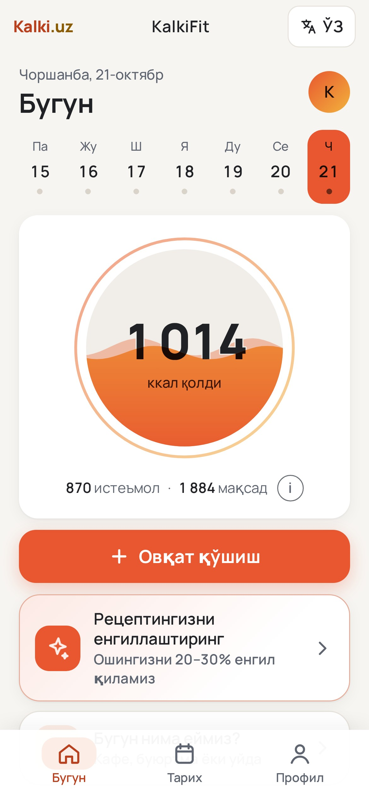
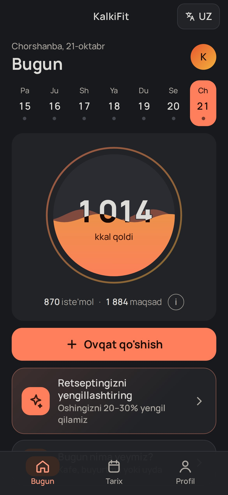
Osh, lag‘mon, somsa — bazada yo‘q yoki noto‘g‘ri hisoblangan
Bor bo‘lsa ham — «ozish uchun yemang» deb qoralanadi
Ta’qiqlar zeriktiradi — odam ilovani tashlab ketadi
Ta’qiqlamaymiz — yengilroq yo‘lni ko‘rsatamiz
Tushunarli — hamma narsa bir ekranda
Ochiq raqamlar — manbasi ko‘rsatilgan
Qancha qoldi — bir qarashda
Ovqat qo‘shish — bir bosishda
📷 Taomni rasmga oling — kaloriyasi o‘zi chiqadi
Gap bilan yozing — AI o‘zi ajratadi
Kosa, lagan — o‘z idishlaringiz bilan
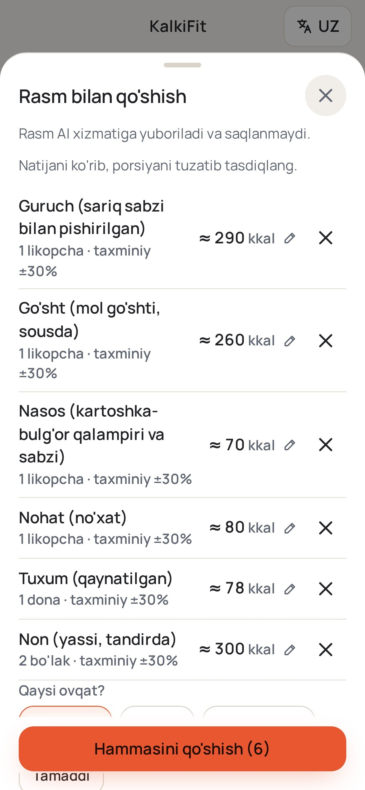
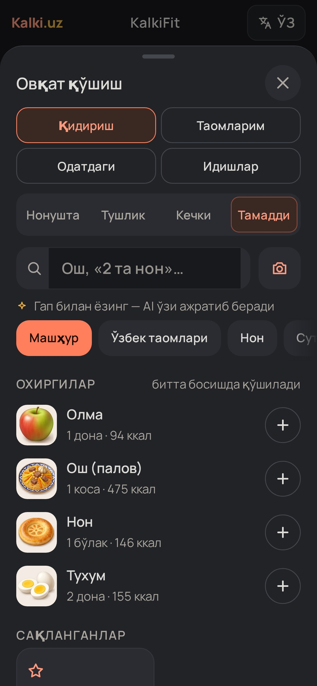
Uy oshi, 1 porsiya: −22%
Ta’mi qoladi: dumba, yog‘ va go‘sht muvozanati
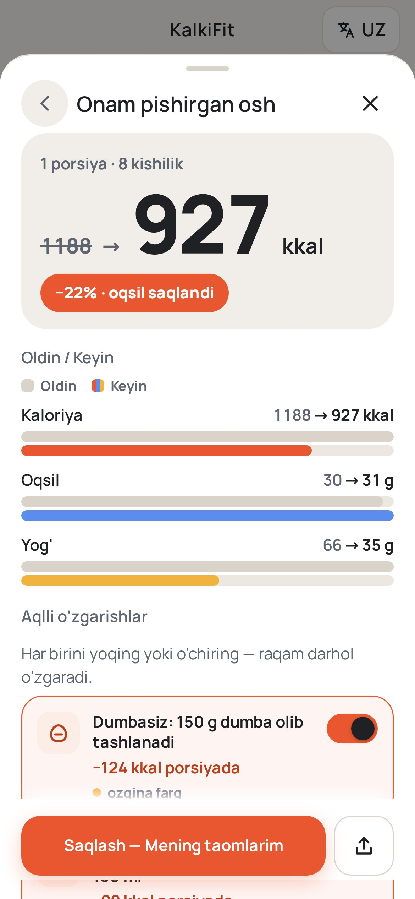
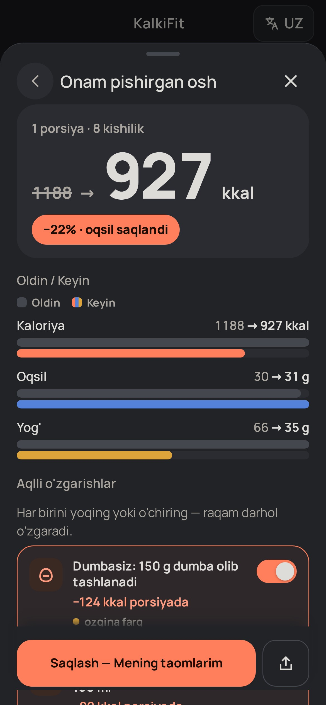
Telegram va Instagram uchun tayyor kartochka
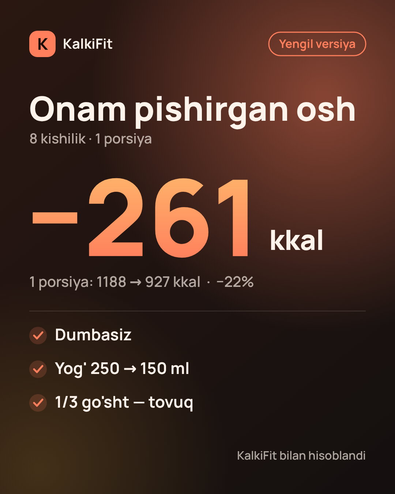
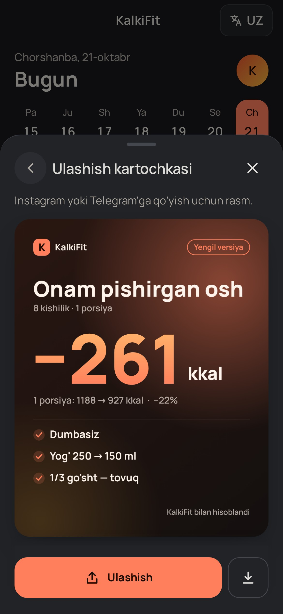
Kafeda, buyurtma yoki uyda
Oqsilga boy va yengilroq — belgi bilan
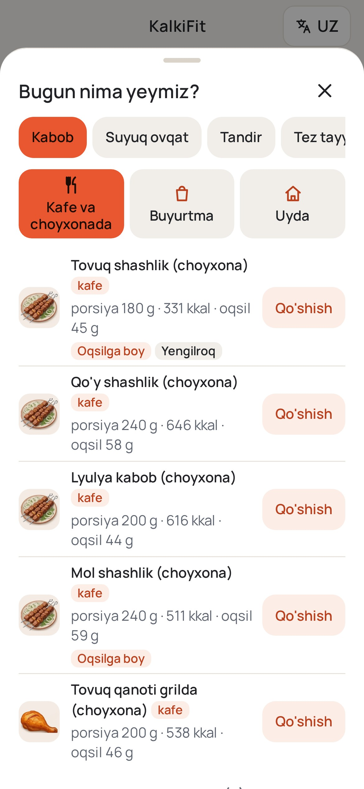
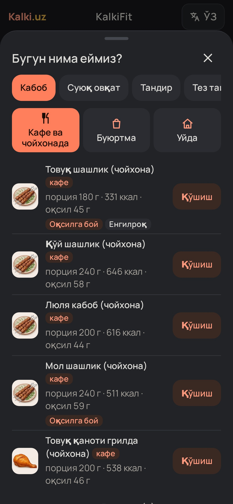
Oqsil saqlanadi, yog‘ kamayadi
Farq kam bo‘lsa — shuni ochiq aytamiz
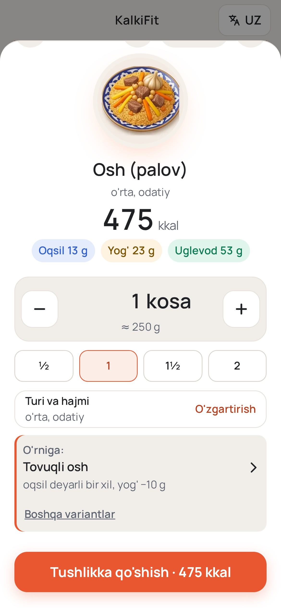
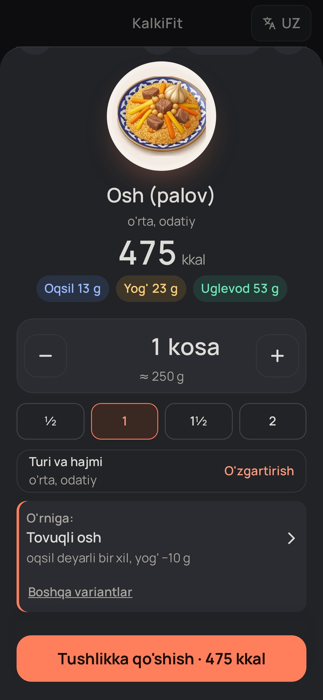
Haftada bir kun eslatma — kunni o‘zingiz tanlaysiz
Buyurtma, kafe yoki uyda — retsept va xarid ro‘yxati bilan
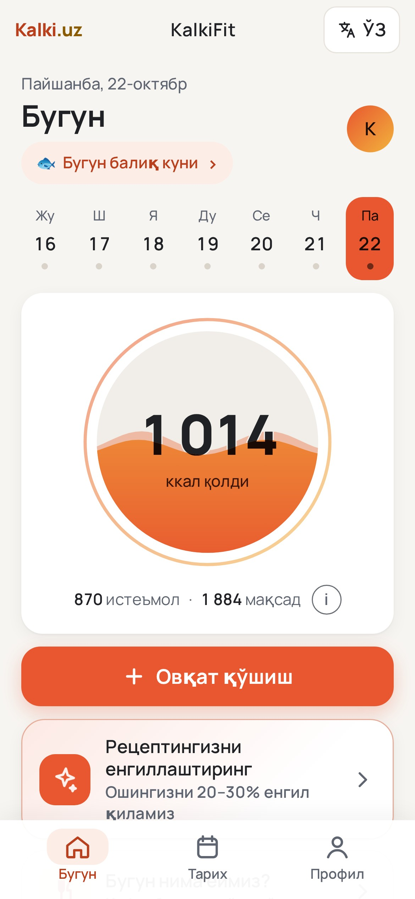
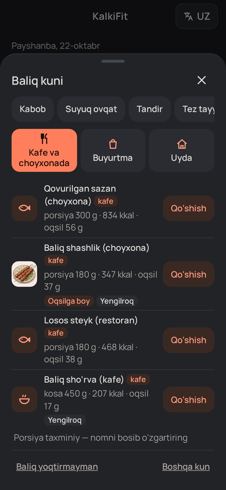
Baliq, tuxum, sut, yong‘oq, glyuten — belgilang, takliflarda chiqmaydi
Allergiya yoki odat — o‘zingiz belgilaysiz
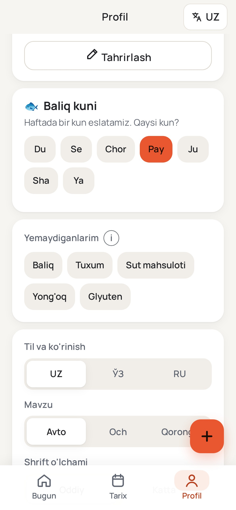
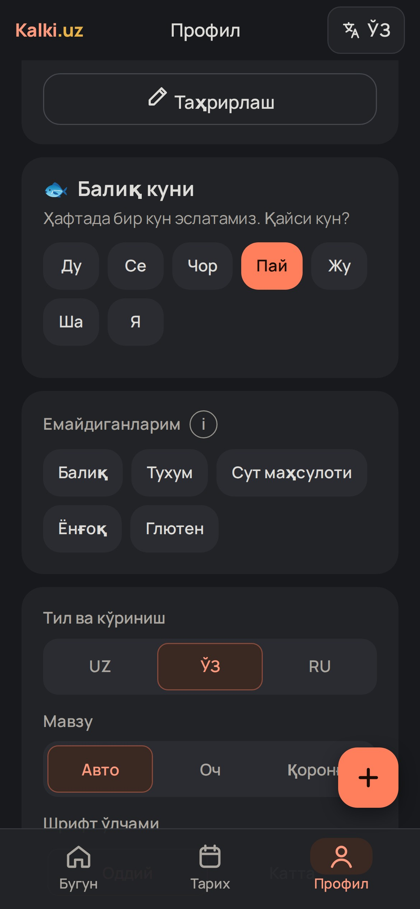
Ko‘pchilikka kerak emas — avval ovqatingizni ko‘ring
Reklamasiz, ochiq maslahat
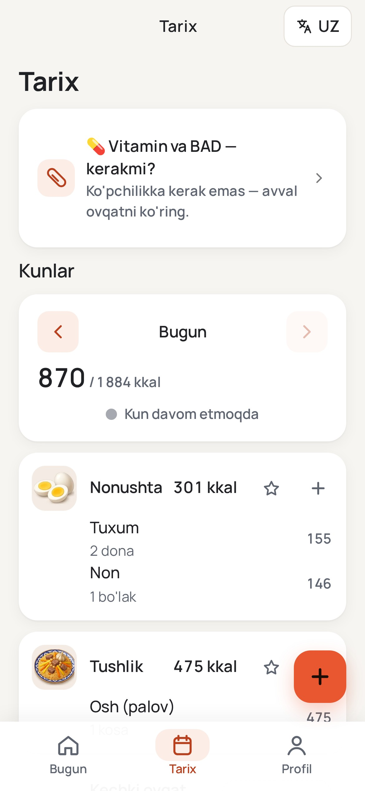
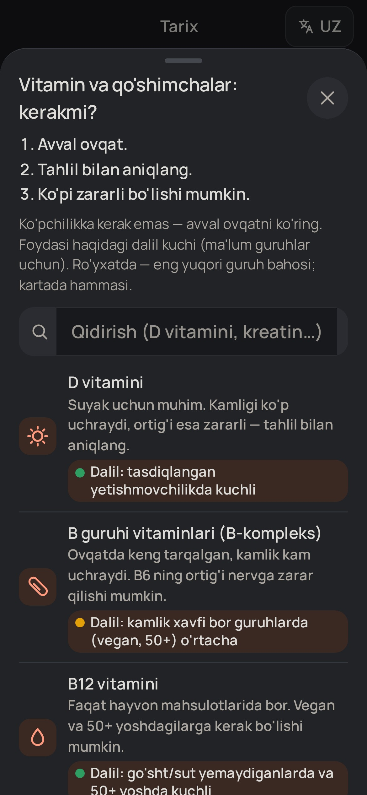
Klaviaturasiz — barmoq bilan suring
Xohlasangiz — keyinroq
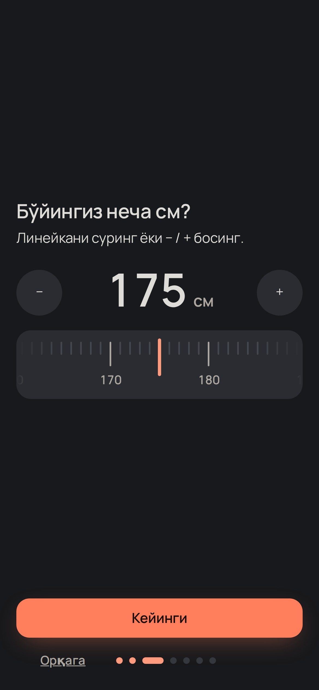
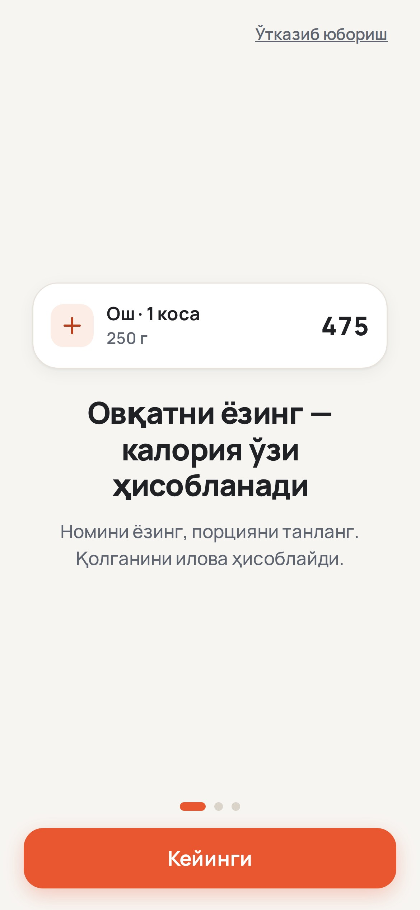
kalki.uz/kalkifit
Hozir bepul sinab ko‘ring